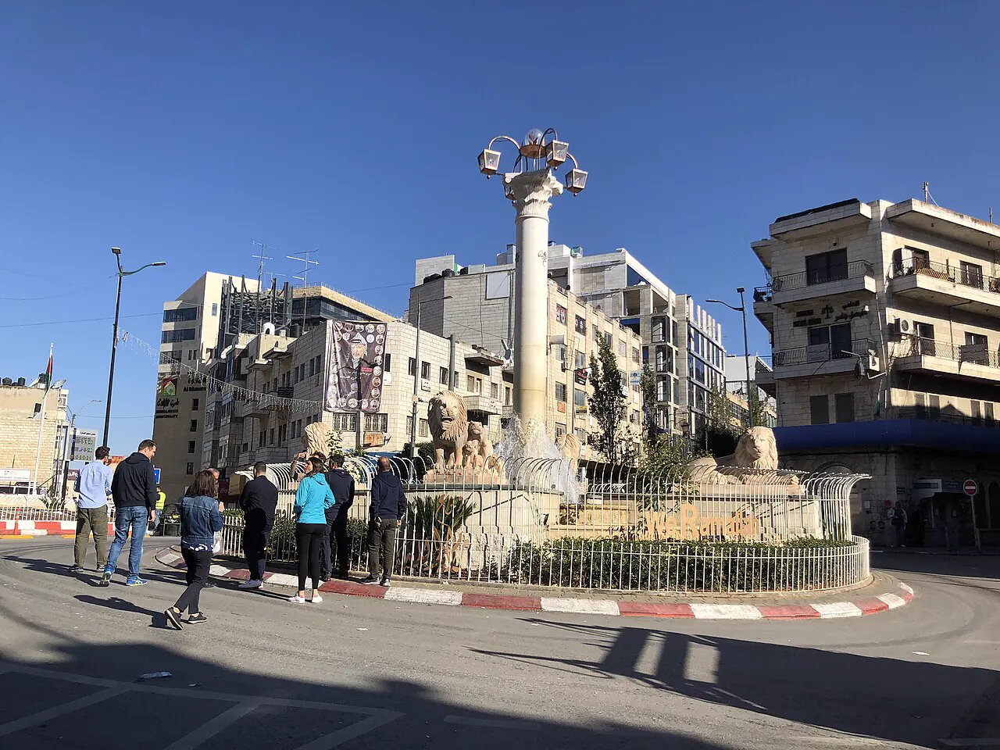

Vice President al-Sheikh condemns Colombia’s embassy opening in Jerusalem
Ramallah — Hussein al-Sheikh said the move flouts international law and the city’s special legal and historical status, and urged the world to act.


Palestinian Vice President Hussein al-Sheikh condemned the Colombian government’s opening of an embassy in Jerusalem, which he called the capital of the State of Palestine within the 1967 borders.
We condemn the Colombian government’s opening of an “embassy” in occupied Jerusalem, the capital of the State of Palestine within the 1967 borders.
In a post on X, he said the step flagrantly disregards international law and violates the special legal and historical status of the holy city, and called on the international community to confront measures aimed at changing Jerusalem’s identity and status, WAFA reported.
Share this report
The rest of this hour
Colombia opens embassy in Jerusalem; Palestinian ministry calls it a violation
Colombia is the tenth country with an embassy in the city, Reuters reported; Ramallah says the move breaches Security Council resolutions 476 and 478.
Update · Jerusalem · WAFA (Palestinian Foreign Ministry); Reuters
Arab League, OIC and Egypt condemn Colombia’s Jerusalem embassy
The League cited Security Council resolutions 478 and 2334; the OIC chief wrote to Colombia’s foreign minister urging a reversal and warned of consequences.
Statement · World · WAFA (Arab League, OIC, Egyptian Foreign Ministry statements)
Algeria, Kuwait and Arab Parliament join condemnation of Colombia’s Jerusalem embassy
Algeria said the step undermines the two-state solution; Kuwait urged the Security Council to act; the Arab Parliament’s speaker called it null and void.
Statement · World · WAFA (Algerian and Kuwaiti foreign ministries, Arab Parliament)